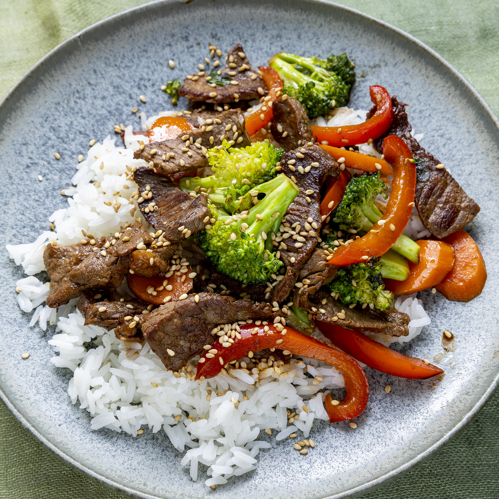

Beef Stir-Fry

Description
Looking for a way to clear out your pantry, with bonus points if it's edible? Look no further than this beef stir-fry recipe! Equal parts simple and quick to make, this is the perfect way to empty your vegetable drawer and use up any extra beef you may have lying around. This glorious combination of veggies, beef, and steaming sauce is perfectly paired with rice or lo mein noodles. You'll be going back for seconds in no time!
Ingredients
- 2 tablespoons vegetable oil
- 1 pound beef sirloin, cut into 2-inch strips
- 1 ½ cups fresh broccoli florets
- 1 red bell pepper, cut into matchsticks
- 2 carrots, thinly sliced
- 1 green opnion, chopped
- 1 teaspoon minced garlic
- 2 tablespoons soy sauce
- 2 tablespoons sesame seeds, toasted
Steps
- Heat vegetable oil in a large wok or skillet over medium-high heat.
- Cook and stir beef until browned, 3 to 4 minutes.
- Move beef to the side of the wok and add broccoli, bell pepper, carrots, green onion, and garlic to the center of the wok.
- Cook and stir vegetables for 2 minutes.
- Stir beef into vegetables and season with soy sauce and sesame seeds.
- Continue to cook and stir until vegetables are tender, about 2 more minutes.
Credits
Content from inesgosner's recipe here.